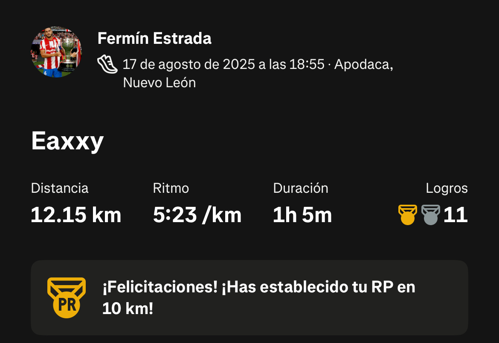

3. Correr
Para complementar mi rutina de entrenamiento, me gusta correr. Es el primer deporte que practiqué; desde los 4 años. Mi mejor tiempo en 5K es 18:45.
Distancia promedio semanal: 10-12 km
| Distancia | Tiempos | |
|---|---|---|
| Mejor | Promedio | |
| 5K | 18:45 | 20:30 |
| 10K | 42:15 | 45:00 |
Mi canción favorita para correr - U not like me - 50 cent